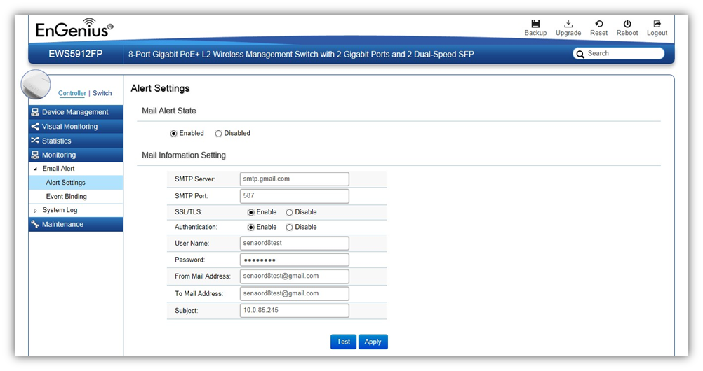

Monitoring > Email Alert > Alert Settings
If an alert is detected, the EWS Switch will record it in the event log. The EWS Switch can also be configured to send email notifications for selected events.

Mail Alert State: Select whether to Enable/Disable email notification.
Mail Information Setting
SMTP Server: Enter the name of the mail server.
SMTP Port: Enter the SMTP port.
SSL/TSL: Enable this option If your mail server uses SSL/TLS encryption.
Authentication: Select this option to enable authentication.
User Name: Enter the username required by the mail server.
Password: Enter the password required by the mail server.
From Mail Address: Enter the email address that will appear as the sender of the email alert.
To Mail Address: Enter the email address which the EWS Switch will send alarm messages to. You can only send alarm messages to a single email address.
Subject: Enter the subject of the email notification.
Test: To verify that the EWS Switch can send email notifications using the SMTP settings you configured, click the Test button.
Apply: Click Apply to save settings.
Created with the Personal Edition of HelpNDoc: Write EPub books for the iPad